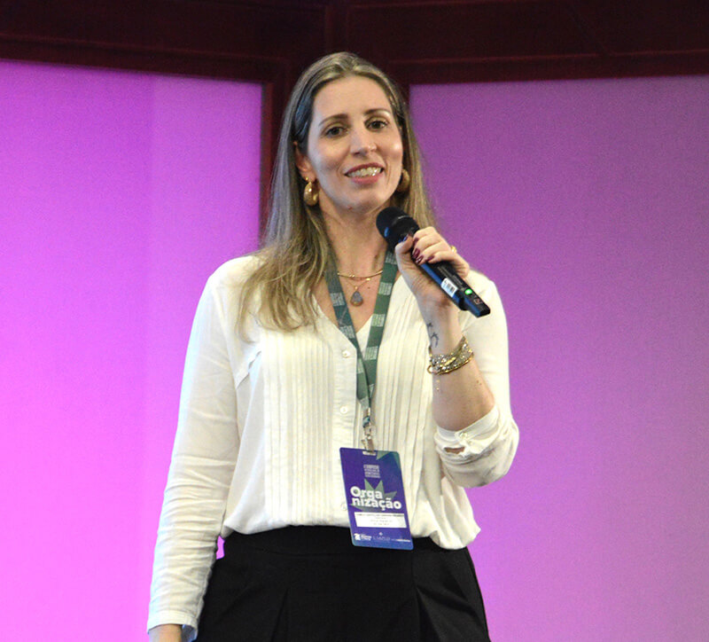
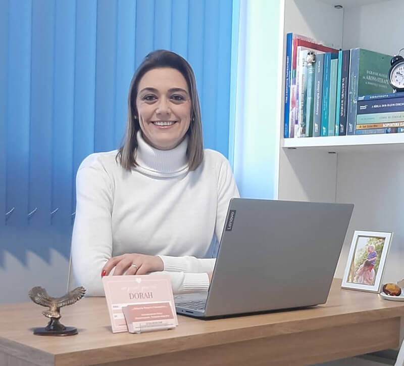
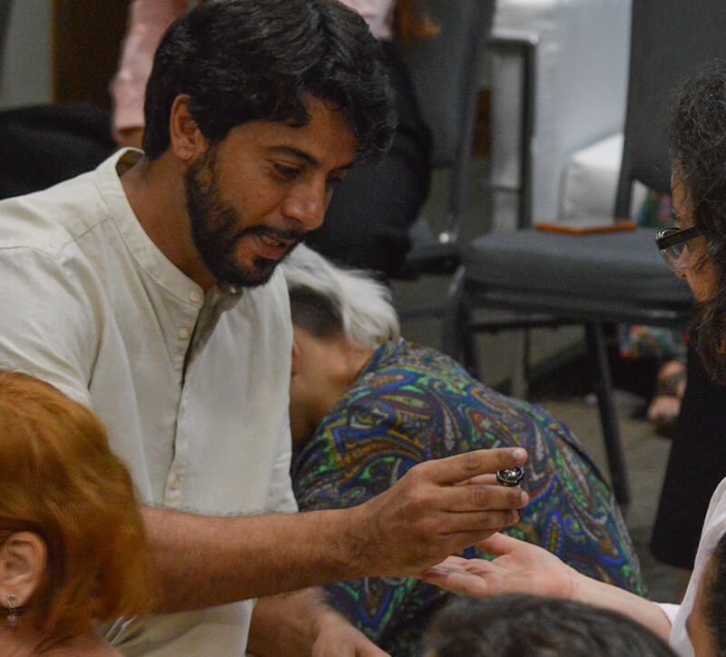
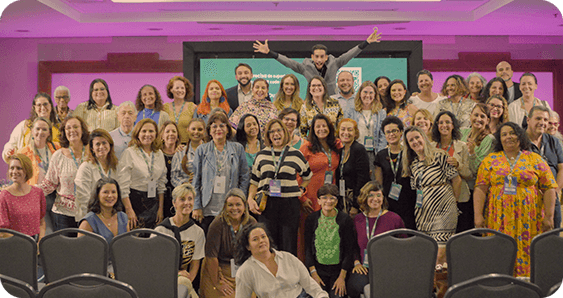

Pessoas que estão começando na aromaterapia e desejam construir uma carreira sólida desde o início, com estratégias claras para atrair clientes e gerar renda consistente.
Quem deseja sair da sua área atual e começar uma nova jornada profissional, transformando sua paixão pela aromaterapia em uma carreira lucrativa e realizada.
Aromaterapeutas que estão cansados de não terem clientes suficientes ou de não conseguirem precificar corretamente seus serviços e desejam crescer no mercado.
Para massoterapeutas, esteticistas, fisioterapeutas, educadores físicos, psicólogos, nutricionistas, profissionais de saúde e empresários do setor de bem-estar que querem integrar a aromaterapia em suas práticas, oferecendo resultados mais completos, diferenciados e ampliando suas oportunidades profissionais.
Avaliamos sua experiência, suas habilidades e a forma como você tem se posicionando no mercado. Aqui, identificamos o que está funcionando e o que precisa ser melhorado.
A partir do seu perfil, analisamos as oportunidades de nichos, serviços e mercados que você ainda não explorou, mas que podem alavancar seus ganhos.
Desenvolvemos um passo a passo exclusivo, com ações práticas para você aplicar no seu dia a dia.




Termos de uso Ι Política de Privacidade